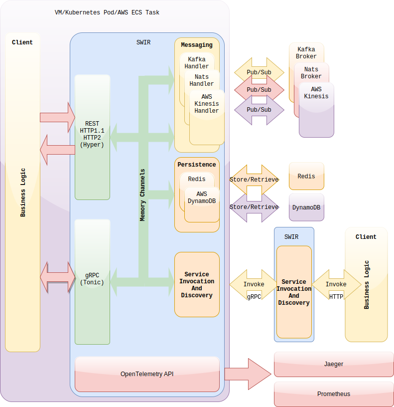

SWIR is a platform allowing you to build and connect microservices quickly.
You write your business logic against a well defined interface and SWIR will take care of connecting your components to necessary infrastructure giving you consistency, security and adherence to best practices out of the box.
The Client APIs are defined in gRPC and OpenAPI 3.0 formats so you can quickly generate your clients in different programming languages.
SWIR offers PubSub,Storage and Service Discovery and Invocation Services.
SWIR is using OpenTracing compatible agents to give your solutions uniform logging and tracing capabilities.
